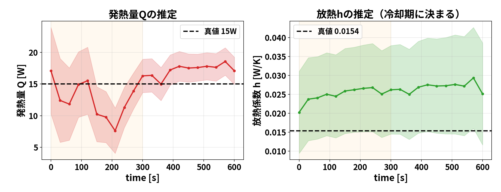
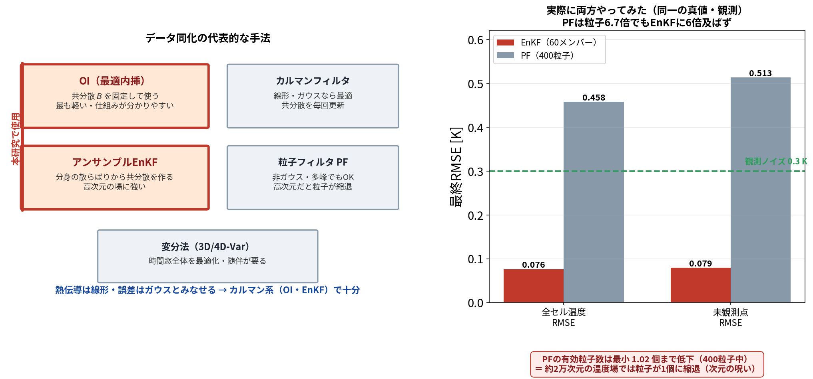
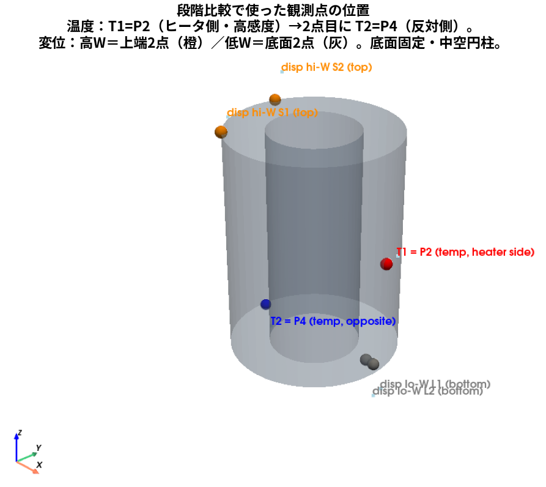
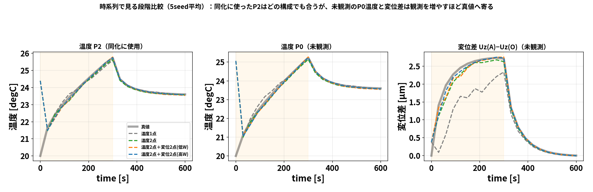
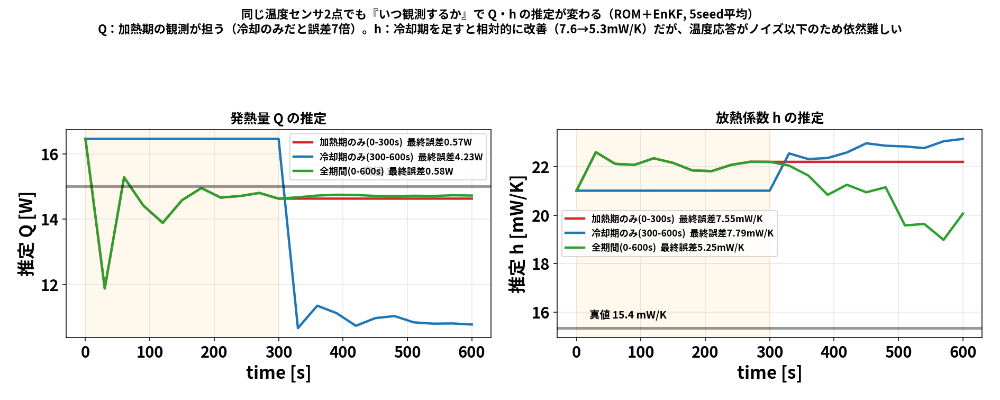

第2回の更新式を使いながら、共分散を毎回の予報メンバーから求めるのがこの記事の主題です。 OIでもQは更新できます。EnKFは、温度とQの関係が時間とともに変わることを標本共分散に反映しますが、正しい同定を保証するわけではありません。
| 読む順番 | 内容 | 実験の区別 |
|---|---|---|
| §1〜3 | 4メンバー・温度2点の手計算 | 説明用の数値例 |
| §4〜5 | Qの更新と計算コスト | 104：実ソルバ5メンバー。106：ROM60メンバーを分けて読む |
| §6 | 観測の種類・位置・時間の比較 | 106のROM実験。独立した実測での検証ではない |
flowchart LR
A["異なる温度・Qのメンバー"] --> B["全員を次の観測時刻へ予報"]
B --> C["各員の温度から変位も予測"]
C --> D["メンバー方向の平均・共分散"]
D --> E["観測との差で各員を更新"]
E --> A更新する温度と、観測として使う変位を区別してください。106では状態は \(z=[T_0,\ldots,T_4,q_{\mathrm{scale}},h]^{\mathsf T}\) 、 \(Q=15q_{\mathrm{scale}}\) Wです。 変位は温度から計算する観測予報であり、独立した状態として時間積分しません。 ROMの \(h\) は放熱コンダクタンス [W/K] です。ROMの構築と全場復元は第4回へ進みます。
第3回は アンサンブルカルマンフィルタ（EnKF） です。前回（blog_002）の OI は 背景共分散 \(B\) を 決め打ちで固定しました。EnKF はここを変えて、
たくさんの”分身（アンサンブル）“を走らせ、その散らばりから共分散を毎回作り直す
のが特徴です。これにより 発熱量 \(Q\) と観測の共分散を予報から推定できます。推定精度は観測情報・モデル・初期分布・メンバー数に依存します。 今回も 節点を減らした具体例で、行列を手で追いながら理解します。
OIとの一言の違い：OI は \(B\) を人間が置く／EnKF は \(B\) を分身の散らばりが教えてくれる。
「予報がどれくらい外れるか（共分散 \(B\) ）」を人間が決めるのは難しい。 そこで EnKF は、少しずつ違う初期値・パラメータを持った \(N\) 個の分身を用意して、 全部シミュレーションで前進させます。その バラけ方（散らばり）そのものが共分散になります。
分身1 ─┐
分身2 ─┼─ みんな少しずつ違う → シミュレーションで前進
⋮ │ → 散らばり方から共分散 C を作る
分身N ─┘この共分散は状況に応じて毎サイクル作り直される（＝流れ依存）。ここが固定 \(B\) の OI との決定的な差です。
\[x_a^{(m)}=x_f^{(m)}+K\bigl(y+\epsilon^{(m)}-Hx_f^{(m)}\bigr)\qquad(m=1,\ldots,N)\]
更新後の分身の 平均が推定値、散らばりが不確かさです。
\(N\) はメンバー数、 \(n\) は状態数、 \(p\) は観測数です。 \(m\) はメンバー番号、 \(f\) は予報、 \(a\) は同化後を表します。観測摂動は \(\epsilon^{(m)}\sim\mathcal N(0,R)\) 、すなわち平均0・共分散Rの正規乱数です。
プログラムでは行にメンバー、列に状態を並べます。
\[ Z_f=\begin{bmatrix}(z_f^{(1)})^{\mathsf T}\\\vdots\\(z_f^{(N)})^{\mathsf T}\end{bmatrix}\in\mathbb R^{N\times n}, \quad Y_f\in\mathbb R^{N\times p}. \]
\(Y_f\) の第m行は、そのメンバーの状態から計算した温度・変位の観測予報です。
\[ \bar z_f=\frac1N\sum_m z_f^{(m)},\quad \bar y_f=\frac1N\sum_m y_f^{(m)},\quad (dZ)_{m,:}=(z_f^{(m)}-\bar z_f)^{\mathsf T}. \]
\(dY\) も同様に観測予報の平均を引きます。
\[ C_{zy}=\frac{dZ^{\mathsf T}dY}{N-1}\in\mathbb R^{n\times p},\qquad C_{yy}=\frac{dY^{\mathsf T}dY}{N-1}\in\mathbb R^{p\times p}. \]
例えば成分ごとに書くと
\[[C_{zy}]_{ij}=\sum_m\bigl(z_{f,i}^{(m)}-\bar z_{f,i}\bigr)\bigl(y_{f,j}^{(m)}-\bar y_{f,j}\bigr)/(N-1).\] 平均を同じ標本から推定するので標本共分散はN−1で割ります。時間方向やセル方向の分散ではありません。 106の温度2点＋変位2点なら \(Z_f:60\times7\) 、 \(Y_f:60\times4\) 、 \(C_{zy}:7\times4\) 、 \(C_{yy}:4\times4\) です。
dacore/enkf.pyの主要計算は次のとおりです（ここでは偏差を拡大するインフレーションを省略）。
zbar = Zf.mean(axis=0)
ybar = Yf.mean(axis=0)
dZ = Zf - zbar
dY = Yf - ybar
C_zy = dZ.T @ dY / (len(Zf) - 1)
C_yy = dY.T @ dY / (len(Zf) - 1)
S = C_yy + R
# Sは対称なので、S @ K.T = C_zy.T を解く。
gain_T = np.linalg.solve(S, C_zy.T)
eps = rng.multivariate_normal(np.zeros(len(y)), R, size=len(Zf))
Za = Zf + (y[None, :] + eps - Yf) @ gain_T逆行列の記号は理論式に使いますが、コードは連立方程式を解きます。変位に基準値の切片がある場合も、Yfに基準値込みの観測予報を渡せば同じ式で更新できます。
更新式をN人分足してNで割ると、
\[ \bar z_a=\bar z_f+K(y-\bar y_f+\bar\epsilon),\qquad \bar\epsilon=\frac1N\sum_m\epsilon^{(m)}. \]
各乱数の期待値は0でも有限Nの標本平均 \(\bar\epsilon\) は一般に0ではありません。次の手計算は \(\bar\epsilon=0\) の平均更新を説明します。実装では各員に異なる摂動を与え、更新後の散らばりも残します。その散らばりはモデルと有限標本に依存する推定であり、真の誤差そのものではありません。
状態を2点の温度 \(x=(T_1,T_2)\) とし、分身を 4つ用意して前進させたら、次の予報になったとします。
| 分身 | \(T_1\) | \(T_2\) |
|---|---|---|
| m1 | 26 | 24 |
| m2 | 30 | 27 |
| m3 | 28 | 25 |
| m4 | 32 | 28 |
| 平均 | 29 | 26 |
「散布図が共分散」というのは比喩ではなく定義そのものです。 各メンバーについて \((T^{(m)}-\bar T)\times(Q^{(m)}-\bar Q)\) を計算し、全部足して \(N-1\) で割る。 赤の象限（両方とも平均より上／両方とも下）は積が＋、青の象限（片方だけ上）は積が−。 丸い雲なら＋と−が打ち消し合って \(\mathrm{Cov}\simeq0\) 、斜めに伸びれば片方に偏って \(\mathrm{Cov}\neq0\)。 実データ（サイクル11・60メンバー）で手計算すると \(\sum=-6.326\) 、 \(\mathrm{Cov}=-6.326/59=-0.1072\) 、相関 \(-0.287\) 。
平均からのズレ（deviation）:
| 分身 | \(\delta T_1\) | \(\delta T_2\) |
|---|---|---|
| m1 | −3 | −2 |
| m2 | +1 | +1 |
| m3 | −1 | −1 |
| m4 | +3 | +2 |
この手計算のCは温度2点の共分散（熱容量のCとは別）です。偏差行列は
\[dZ=\begin{pmatrix}-3&-2\\1&1\\-1&-1\\3&2\end{pmatrix},\qquad C=\frac{dZ^{\mathsf T}dZ}{3}.\]
標本共分散は \(C=\dfrac{1}{N-1}\sum_m \delta x^{(m)}\,\delta x^{(m)\mathsf T}\) （ \(N=4\) なので \(1/3\) ）:
\[C=\frac{1}{3}\begin{pmatrix}(-3)^2+1^2+(-1)^2+3^2 & (-3)(-2)+\cdots+3\cdot2\\ 14 & (-2)^2+1^2+(-1)^2+2^2\end{pmatrix} =\frac{1}{3}\begin{pmatrix}20 & 14\\ 14 & 10\end{pmatrix} =\begin{pmatrix}6.67 & 4.67\\ 4.67 & 3.33\end{pmatrix}\]
読み方： \(C_{12}=4.67>0\) 、つまり 「 \(T_1\) が高い分身は \(T_2\) も高い」と分身たちが教えている。 この相関は人間が置いたのではなく、シミュレーションの結果から自動で出てきたものです。
点1を観測（ \(H=(1,\ 0)\) ）、観測ノイズ \(R=0.3^2=0.09\) 。
\[K=\frac{1}{C_{yy}+R}\begin{pmatrix}6.67\\ 4.67\end{pmatrix} =\frac{1}{6.76}\begin{pmatrix}6.67\\ 4.67\end{pmatrix} =\begin{pmatrix}0.987\\ 0.691\end{pmatrix}\]
以下は観測摂動の平均を0とした計算です。有限メンバーの摂動観測法では、実際の平均には \(K\bar\epsilon\) が加わります。
観測 \(y=30\) （真値 \(T_1=30\) 付近）。予報平均のハズレは \(30-29=1\) 。平均の更新は
\[\bar x_a=\bar x_f+K\times1 =\begin{pmatrix}29\\ 26\end{pmatrix}+\begin{pmatrix}0.987\\ 0.691\end{pmatrix} =\begin{pmatrix}29.99\\ 26.69\end{pmatrix}\]
| 点 | 予報平均 | 同化後平均 | 真値 |
|---|---|---|---|
| 点1（観測） | 29 | 29.99 | 30 |
| 点2（未観測） | 26 | 26.69 | 27 |
観測した点1はほぼ真値へ、未観測の点2も標本共分散の相関を通じて真値へ寄りました。 やっていることは OI と同じ更新式ですが、共分散 \(C\) を分身から作ったのが違いです。 さらに更新後は 分身の散らばりが縮む（不確かさが減った、を表す）。
実際の106の「P2/P0＋変位S1/S2」の計算を一続きに追う場合は、実施した手順と最初の更新の実数値 を先に読んでください。以下には別の観測構成の例も含まれます。
「温度を推定する」話をしてきましたが、同じ仕組みで発熱量 \(Q\) や放熱 \(h\) といった 「モデルの中の分からない数」も同時に推定します。まず、それらを状態ベクトルに入れる 状態拡大（state augmentation）を行い、各メンバーのQ・hで予報した温度・変位との共分散を使って更新します。 状態に入れることは更新の準備であり、正しく同定できることの保証ではありません。
代表点以外のセンサがどうROMへ反映されるか、Z
のq・hの列がどう書き換わり次の時間積分へ渡るかは、 blog_006
§3-8「コードで確認する：観測点以外の情報が、代表5点・Q・hへ入る手続き」に、実装との対応をまとめました。

ステップ1：状態を拡大する
ふつうは温度だけを状態にします:
\[z=(T_1,T_2,T_3,T_4,T_5)^{\mathsf T}\]
（5次元）
ここに推定したいパラメータを継ぎ足します:
\[z=(\underbrace{T_1,\dots,T_5}_{T},\ \underbrace{Q,\ h}_{\theta})^{\mathsf T}\]
（7次元。前の5個が物理量＝温度、後ろの2個がパラメータ）
これだけで、あとは何も変えません。EnKFのコードは「7次元の状態」として扱うだけです。
ステップ2：メンバーごとに違うパラメータを持たせる
60個のメンバーに、それぞれ違う \(Q\) と \(h\) を配ります（最初は何も分からないので広めに）:
Z[:, :5] = rng.uniform(T_air-3, T_air+12, (N, 5)) # 温度もバラバラ
Z[:, 5] = rng.uniform(0.3, 1.8, N) # Q（発熱倍率）
Z[:, 6] = np.clip(rng.normal(0.02, 0.01, N), 1e-3, 0.1) # h前進させるとき、パラメータは時間で変化させません（ \(dQ/dt=0\) として運ぶ）。 温度だけがそのメンバー自身の \(Q,h\) に従って動きます。
ステップ3：温度を観測して、状態を丸ごと更新する
\[z^a=z^b+K\,(y-Hz^b)\]
\(H\) は「どの成分を測ったか」を表す行列です。温度しか測らないので、\(H\) の \(Q\) 成分も \(h\) 成分もゼロ:
\[H=\begin{pmatrix}0&1&0&0&0&\color{red}{0}&\color{red}{0}\end{pmatrix}\]
（2番目の温度 \(T_2\) だけ測る場合）
ステップ4：それでもパラメータが動く
ここが肝心です。 \(H\) の \(Q\) 成分がゼロなのに、なぜ \(Q\) が更新されるのか。
ゲインは \(K=P H^{\mathsf T}(HPH^{\mathsf T}+R)^{-1}\) で、\(P\) の非対角成分が効きます。 メンバーを前進させると「 \(Q\) が大きいメンバーほど温度が高い」という関係が自然にできるので:
\[P\simeq\frac{dZ\,dZ^{\mathsf T}}{N-1}\quad\Longrightarrow\quad P_{T_2Q}\neq0\]
したがってゲインの \(Q\) 行は
\[K_Q=\frac{P_{T_2Q}}{P_{T_2T_2}+r}\;\neq 0\]
となり、温度の残差 \(y-Hz^b\) が \(Q\) を引っぱります:
\[Q^a=Q^b+K_Q\,(y-Hz^b)\]
本研究の本番の計算（観測＝温度 P2・P0 ＋ 上面 A・O の \(U_z\) 、60メンバー、シード 20260913）を
そのまま再実行し、更新の瞬間の値を記録した（run/trace_actual_da_cycle.py）。
\(q\) は発熱倍率で \(Q=15q\) W。初期アンサンブルの平均は \(Q=17.09\) W。
サイクル1（ \(t=30\) s）
| 観測 | 観測値 \(y\) | 予報平均 \(\bar Y_f\) | 残差 \(y-\bar Y_f\) | \(K_q\) | 寄与 \(K_q\times\) 残差 |
|---|---|---|---|---|---|
| \(T\)(P2) [K] | 294.542 | 299.500 | −4.958 | +0.4423 | −2.1929 |
| \(T\)(P0) [K] | 294.028 | 298.887 | −4.859 | −0.4032 | +1.9592 |
| \(U_z\)(A) [µm] | 1.321 | 6.648 | −5.327 | +0.0088 | −0.0470 |
| \(U_z\)(O) [µm] | 0.063 | 5.186 | −5.124 | −0.0005 | +0.0024 |
寄与の合計は \(-0.278\) （ \(Q\) に換算して −4.17 W）で、実際に \(Q\) は 17.09 → 12.88 W に下がった。 初期のメンバーは温度を高めにばらつかせてあるので、観測が予報より約5 K 低く、 \(Q\) が大きく引き下げられている。
サイクル5（ \(t=150\) s）
| 観測 | 観測値 \(y\) | 予報平均 \(\bar Y_f\) | 残差 | \(K_q\) | 寄与 |
|---|---|---|---|---|---|
| \(T\)(P2) [K] | 296.756 | 296.769 | −0.013 | +0.0991 | −0.0013 |
| \(T\)(P0) [K] | 296.292 | 296.273 | +0.018 | +0.0733 | +0.0013 |
| \(U_z\)(A) [µm] | 2.758 | 3.287 | −0.530 | +0.0745 | −0.0394 |
| \(U_z\)(O) [µm] | 1.670 | 1.057 | +0.613 | −0.0251 | −0.0154 |
温度の残差はほぼ0になっており、 \(Q\) を動かしているのは変位の残差（上面Aの寄与 −0.0394 が最大）である。 \(Q\) は 13.15 → 12.47 W。
サイクル10（ \(t=300\) s） 残差・ゲインとも小さくなり、 \(Q\) は 14.16 → 14.22 W とほとんど動かない。
このシードの最終値は \(Q=14.36\) W、5シード平均では 14.89 W（真値 15 W）。
読み取れることは2つある。最初のサイクルでは温度の残差が大きいので温度が \(Q\) を主に動かし、 温度が合ってきた後は変位の残差が \(Q\) を動かしている。 また \(K_q\) は毎サイクル60メンバーの散らばりから計算し直しているので、サイクルが進むと小さくなる （ \(T\)(P2) の \(K_q\) は 0.4423 → 0.0991 → 0.0224）。
要点：測っていない量でも、測った量と相関していれば更新される。 OIとの違いは、この相関 \(P_{T_2Q}\) を決め打ちする（OI）か、毎サイクル作り直す（EnKF）かだけです。 OIで \(Q\) が9 W止まりだったのは、実際の相関が時間とともに変わるのに固定していたからでした（blog_002 §3-6）。
上の図③のとおり、 \(Q\) のアンサンブルは真値15 Wのまわりに収束し、ばらつき（±1標準偏差）が 6.8 W → 2.1 W に縮みます。 ばらつきが縮むということは、観測から \(Q\) の情報が実際に入っているということです。
| 観測構成 | 最終 \(Q\) [W]（600 s、5 seed 平均） |
|---|---|
| 同化なし | 16.45（初期値のまま） |
| 温度1点（P2） | 13.74 |
| 温度1点（P4） | 14.21 |
| 温度2点（P2＋P0） | 14.05 |
| 温度2点＋変位2点 | 14.89 |
| 真値 | 15.00 |
（run/run_da_compare.py、results/da_compare.yaml）
\(Q\) と \(h\) では効く時間帯が違います（上図④）。感度を直接積分して確かめたところ:
直感どおりです。ヒータが入っていない時間に \(Q\) の情報は増えませんし、 温まっていない物体から放熱の情報は出てきません。
実際、観測する時間帯を変えると \(Q\) の推定誤差は大きく変わりました（上図⑤）:
| 観測する時間帯 | \(Q\) の推定誤差 |
|---|---|
| 加熱期だけ（0–300 s） | 0.57 W |
| 冷却期だけ（300–600 s） | 4.23 W（7倍悪化） |
| 全区間（0–600 s） | 0.58 W |
センサ設計は「どこに置くか」だけでなく「いつ記録するか」まで含みます。
\(h\) （放熱コンダクタンス）もまったく同じ手順で状態に入れてあります。 ところがこちらは当たりません。
| 推定値 | 真値 | |
|---|---|---|
| \(Q\) | 14.88 W | 15.00 W |
| \(h\) | 0.0251 W/K | 0.0154 W/K（63%過大） |
しかも \(h\) のばらつきは 0.0108 → 0.0135 とむしろ広がっています。 観測から情報が入っていない証拠です。
同化の設定を疑う前に、そもそも\(h\) が観測に現れているのかを確かめました。 同化を一切かけず、 \(h\) だけを 40% 変えて600秒まで前進させ、応答の差を測ります:
| \(h\) を40%変えたときの差 | 観測ノイズ \(\sigma\) | 比 | |
|---|---|---|---|
| 温度 | 0.049 K | 0.30 K | 1/6 |
| 変位 | 0.058 µm | 0.30 µm | 1/5 |
\(h\) の効果がノイズに完全に埋もれています。 これは「フィルタのチューニングが悪い」のではなく、 この実験条件（600秒・室温との差が数K）では \(h\) の情報が観測に出てこないという、 問題設定そのものの性質です。専門用語では可同定性（identifiability）が低いといいます。
理由もはっきりしています。この形状・この \(h\) での一様冷却の時定数は約 15,800 秒（4.4時間）。 600秒の観測はその 4% しか見ていません。冷え始めたところで実験が終わっているので、 放熱の情報が蓄積されないのです。
「 \(h\) が63%もずれている」と聞くと失敗に見えますが、今回の600秒の状態推定では、hの大きな誤差と小さな温度・変位誤差が共存しました。影響が完全にゼロという意味ではありません。 理由は、当たらない理由とまったく同じです。
\(h\) が観測に現れない ＝ \(h\) を間違えても600秒の温度・変形に現れない（表裏一体）
実際、 \(h\) が 0.0251（真値0.0154）のままでも、最終的な精度は
| 値 | |
|---|---|
| 温度RMSE | 0.160 K |
| 変位差の誤差 | 0.165 µm |
まで下がっています。「今知りたいこと」は達成できているわけです。
では、いつ困るのか。 \(h\) のずれが効いてくるのは予測したい時間が長くなったときです。 同じROMで、真の \(h\) と推定した \(h\) を入れて回し、温度の差を見ました:
| 予測したい時間 | \(h\) のずれが生む温度誤差 | 観測ノイズ0.3 Kとの比 |
|---|---|---|
| 600 s（今回の実験） | 0.08 K | 0.26倍 ― 埋もれる |
| 30分 | 0.22 K | 0.74倍 |
| 1時間 | 0.39 K | 1.3倍 ― 無視できない |
| 3時間 | 0.66 K | 2.2倍 |
さらに定常状態まで行くと決定的です。定常温度上昇は \(\Delta T_{ss}\propto Q/h\) なので、
\[\frac{\Delta T_{ss}^{\mathrm{est}}}{\Delta T_{ss}^{\mathrm{true}}}=\frac{h_{\mathrm{true}}}{h_{\mathrm{est}}}=\frac{0.0154}{0.0251}=0.61\]
（est＝推定値、true＝真値）
定常温度を39%も取り違えます。 工作機械の暖機運転のように数時間の挙動を予測したいなら、 \(h\) の同定は避けて通れません。
いちばん大事なこと：「当たらない」と事前に分かること自体に価値があります。 感度 \(\partial T/\partial h\) を先に計算しておけば、 実験前に「このセンサ構成・観測時間ではhの情報が弱い可能性」を評価できます。 単回の応答がノイズより小さいだけでは同定不能と断定できません。長時間の同一ROM試験ではh平均の誤差が改善しています（最新の条件・限界）。 当たらないのに当たったつもりで使うのが、いちばん危険です。
実務での意味： \(h\) を同定したければ、実験を長くするか、温度差を大きくするか、 \(h\) の影響が増幅される観測量を探すしかありません。 逆に言えば、 \(Q\) のように短時間で強く効くパラメータは少数観測でも当たるということでもあります。 「何が同定できて、何ができないか」を事前に見積もれるのが、感度を直接計算しておく価値です。
OI（blog_002）では、固定 \(B\) のもとで 発熱量 \(Q\) が真値に届きにくいという弱点がありました （ \(\sigma_Q\) を100倍振っても \(Q\) は約9 Wで頭打ち）。EnKF はここで差が出ます。
EnKF では状態に \(Q\) も入れて 拡大状態 \(z=(T_1,\ldots,Q,\ h)\) にします。分身ごとに \(Q\) を少し変えて前進させると、
この相関を通じて観測との差を Qにも配分できます。以下は今回得られた結果であり、常に真値へ収束するという保証ではありません。 本研究の実ソルバEnKFでは、でたらめ初期から
という結果でした。これは104の実ソルバ・5メンバー・60秒ごと10更新の実験です。OIとの差には設定の違いも含まれ、手法一般の優劣を証明する比較ではありません。
「前進積分するだけで相関が現れる」というのは本当か、アンサンブルの標本相関係数を毎サイクル覗いて
確かめます（run/enkf_correlation_demo.py）。温度とQをわざと独立にサンプリングして始めます:
Z[:, :5] = rng.uniform(T_air-3, T_air+12, (60, 5)) # 温度
Z[:, 5] = rng.uniform(0.3, 1.8, 60) # Q（温度とは無関係に振る）各サイクルで前進積分した直後の \(\mathrm{corr}(T_i,\ Q)\) は次のように変化しました （観測は温度P2の1点のみ、60メンバー）:
| サイクル | 時刻 | P0 | P1 | P2（ヒータ） | P3 | P4 |
|---|---|---|---|---|---|---|
| 0（初期） | 0 s | 0.05 | −0.04 | −0.08 | −0.14 | 0.36 |
| 1 | 30 s | 0.19 | 0.07 | 0.30 | 0.03 | 0.32 |
| 2 | 60 s | 0.31 | −0.00 | 0.54 | −0.09 | 0.18 |
| 5 | 150 s | 0.25 | −0.83 | 0.70 | −0.71 | −0.86 |
| 10 | 300 s | 0.65 | −0.87 | 0.84 | −0.45 | −0.93 |
読み方:
この相関のおかげで、温度をP2の1点測っただけでも \(Q\) に情報が伝わります:
最終: Q = 15.95 W (真値 15 W) / h = 0.0287 W/K (真値 0.0154) / 温度RMSE = 0.156 K\(Q\) は誤差6 %まで当たる一方、\(h\) は約2倍ずれたままです。 これは §6 や blog_005 で扱う「 \(h\) は温度応答が小さく、観測ノイズに埋もれる」という問題で、 手法の限界として正直に押さえておくべき点です。
ここから下の2図は別の実験です。
106のROM・60メンバー・温度P2のみの同化で、変位観測は使いません。真値も同じROM、seed=20260913、30秒ごと20更新。
results/da_summary.yamlでは最終Q=17.08 W（真値15
W）、h=0.02511 W/K（真値0.01535 W/K）です。104の14.93
Wを示した図ではありません。

温度P2のみを同化したROMのQ/h履歴。Qにもhにも誤差が残っている。hは壁面熱伝達率ではなくROMの放熱コンダクタンス。

同化を重ねるごとに全点温度RMSEが下がる。
EnKF の弱点は 重さです。共分散を作るために 分身を \(N\) 個、毎サイクル全部前進させます。 実ソルバ（OpenFOAM＋FrontISTR）でこれをやると、
となります。実ソルバを複数回進める計算負担と、共分散を予報に応じて更新できる利点の比較です。これらは既存実行例の全体時間で、同一条件の速度ベンチマークではありません。 この重さを避けるために 予報モデルを ROM に置き換えるのが、106 の POD+Q-DEIM の役割でした （0〜600秒が数秒で回るので、EnKF を何度も試せる）。
データ同化の手法はEnKFだけではありません。代表的なものを並べると:

左：代表的な手法。本研究で使うのはOIとEnKF。右：同一条件で粒子フィルタと比べた実測結果。
| 手法 | 特徴 | 本研究では |
|---|---|---|
| OI（最適内挿） | 共分散 \(B\) を固定。最も軽く、仕組みが分かりやすい | 使う（blog_002。仕組みの理解と実ソルバ検証） |
| EnKF | 分身の散らばりから共分散を作る。高次元の場に強い | 使う（本記事。パラメータも同時推定） |
| 粒子フィルタ（PF） | 非ガウス・多峰の分布でもOK。ただし高次元で粒子が縮退 | 試したが不採用（下記） |
| 変分法（3D/4D-Var） | 時間窓全体を最適化。随伴コードが必要 | 今回は対象外 |
「非ガウスに強いなら粒子フィルタの方が良いのでは」という疑問は当然です。
そこで 103_1_openfoam_da_pf
で、EnKFと同一の真値・同一の観測を使って比較しました。
| EnKF | PF | |
|---|---|---|
| サンプル数 | 60メンバー | 400粒子（6.7倍） |
| 全セル温度の最終RMSE | 0.076 K | 0.458 K（6倍悪い） |
| 未観測点の最終RMSE | 0.079 K | 0.513 K |
| 発熱倍率の推定 | ― | 1.72（真値 1.0） |
| 放熱 \(h\) の推定 | ― | 0.806（真値 0.0236 ＝ 34倍） |
| 有効粒子数の最小値 | ― | 1.02 個（400粒子中） |
決定的なのは最後の行です。有効粒子数（ESS）が実質1個まで落ちている ＝ リサンプリングの後に1つの粒子だけが生き残り、分布を表現できていない。 これが高次元における粒子フィルタの次元の呪いそのものです。
理屈：PFは状態空間の次元が上がると、必要な粒子数が指数的に増えます。 本ケースの状態は約20,000セルの温度場。一方EnKFは共分散を低ランク近似するので、 数十メンバーでも高次元の場を扱えます。
結論：熱伝導は線形で、誤差もガウスとみなせます。 このような問題にはカルマン系（OI・EnKF）で十分であり、 粒子フィルタの利点（非ガウス対応）は活きないまま、欠点（次元の呪い）だけが出ます。
なお OIとEnKFの両方を使うのは役割が違うからです。 OIは仕組みを理解・説明するのに向き（更新式1本、3点で手計算できる）、 同時に共分散を固定する弊害を示す材料でもあります （実ソルバのOIは温度場RMSE 0.09 Kまで下がるのに \(Q\) は8.9 W止まり）。 EnKFは共分散を毎サイクル作り直すので、\(Q\) や \(h\) を状態に入れて同時推定できます。
軽いROMの上でEnKFを何度も回せるようになったので、観測設計の実験を2つ紹介します。
まず どこで観測しているか（この種の図はDA結果とセットで必ず示します）:

温度は T1=P2（ヒータ側）、2点目に T2=P4（反対側）。変位は高W＝上端2点（橙）／低W＝底面2点（灰）。底面固定の中空円柱。

ROM＋EnKF・5seed平均。温度1点→2点で大きく改善し、変位2点を足すとさらに改善。 そして同じ変位2点でも、熱感度 \(W\) の高い点に置いた方が効く（低Wだと効きが半減）。
時系列でも見てみます（同化に使った点と未観測点を分けて）:

左＝同化に使った P2：どの構成でも真値に合う。中＝未観測の P0：温度1点（灰）は加熱期にずれる。 右＝未観測の変位差 Uz(A)−Uz(O)：温度1点は大きく外れ、観測を増やすほど真値へ。同化に使った点だけの評価では不十分で、未観測の量で比べるのが公平です。
| 観測構成 | 温度RMSE（加熱期） | 未観測の変位差誤差 |
|---|---|---|
| 温度1点 | 0.617 K | 0.869 µm |
| 温度2点 | 0.197 K | 0.151 µm |
| 温度2点＋変位2点（低W） | 0.188 K | 0.104 µm |
| 温度2点＋変位2点（高W） | 0.159 K | 0.077 µm |
観測の効き目は場所だけでなく時間にもあります。同じ温度2点で、同化する時間窓だけを変えると:

直接感度 \(\partial T/\partial Q\) は加熱期に大きく、 \(\partial T/\partial h\) は冷却期に大きい。実験でも \(Q\) は加熱期の観測が担い（加熱のみ0.57 W ≈ 全期間0.58 W、冷却のみだと4.23 Wと7倍悪化）、 \(h\) は冷却期を足すと相対的に改善（7.6→5.3 mW/K）。ただし \(h\) は温度応答がノイズ以下のため依然難しい。
まとめると、観測設計は「どこで（空間）・何を（種類）・いつ（時間）」の3軸で考える、というのが実験から見えた形です。
| 回 | テーマ | キモ |
|---|---|---|
| blog_001 | CHT→熱膨張＋熱伝達率 | 固体＋空気を一体で解き、温度→変形、面ごとの \(h\) を診断 |
| blog_002 | OI データ同化 | 感度で観測点を選ぶ／固定 \(B\) で軽く更新／ \(Q\) は弱可同定 |
| blog_003 | EnKF | 予報から共分散を更新／Qの同定精度は条件に依存／実ソルバでは重い |
3つを貫くメッセージは、「少数の観測から全体（温度・変形・熱源）を推定する」 こと。 そのために どこを測るか（感度）・どう共分散を作るか（固定 \(B\) か分身か）・どう軽くするか（ROM） を 使い分ける、というのが本研究の骨格です。
blog_002_oi_data_assimilation.mdblog_004_pod_selected_rom.md
§1blog_004_pod_selected_rom.md